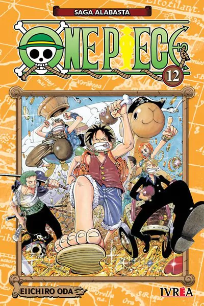

Eiichiro Oda
Ecritor e artista. Criador de One Piece.
Eiichiro Oda, nascido 1 de janeiro de 1975 na cidade de Kumamoto, no Japão, é um mangaká, mais conhecido como o criador do mangá "One Piece".
Wanted! (em 1992)
Kami Kara Mirai
No Present (em 1993)
Itsuki Yakou
(em 1993)
Monsters (em 1994)
Romance Dawn
(2ª versão, em 1996)
Wanted Colection! (em 1998)
Dividido em 5 volumes

One Piece (em 1999)
Dragon Ball x One Piece:
Cross Epoch (em 2007)
CLIQUE AQUI PARA SABER MAIS